A wave is a disturbance that travels through a material. When you tap a concrete block with an ultrasonic transducer, a small pulse travels through it, bounces off the edges, and bends around anything hidden inside, such as a void or a crack. If we can simulate that wave well, we can also work backwards from measurements and find what is hidden. That is the motivation for this whole series.
Numbers in square brackets, such as [1], point to the references at the end of this page.
Why Study The Wave Equation?
Waves are one of the few ways to look inside something without opening it. They travel through the material, and everything they meet on the way changes them: a layer slows them down, a crack reflects them, a void bends them. So a recording of a wave at the surface carries a picture of the inside, if we know how to read it. The wave equation is the rule that connects the inside of the material to what we record, and almost every imaging method built on waves starts from it.
All of these work the same way: a source sends a wave, the wave meets something, and a receiver records what comes back.
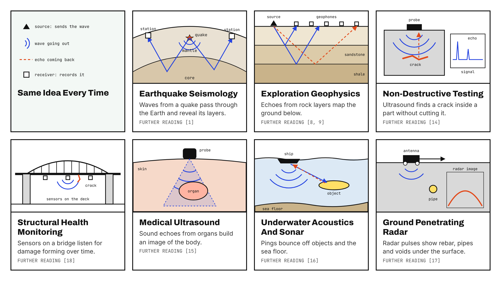
| Application | What travels | What we want to know | Further reading |
|---|---|---|---|
| Earthquake seismology | elastic waves through the Earth | the structure of the crust and mantle, the earthquake source | [1] |
| Exploration geophysics | seismic waves from controlled sources | rock layers, reservoirs, the ground under a building site | [8], [9] |
| Non-destructive testing | ultrasound in steel, concrete or composites | cracks, voids and delamination, without damaging the part | [14] |
| Structural health monitoring | guided and bulk waves in bridges, pipes and buildings | whether damage is forming over time | [18] |
| Medical ultrasound | sound in soft tissue | images of organs and blood flow | [15] |
| Underwater acoustics and sonar | sound in the ocean | objects, the sea floor, ocean properties | [16] |
| Ground penetrating radar | electromagnetic waves in soil and concrete | rebar, pipes, moisture, buried objects | [17] |
The last row is a reminder that the same mathematics also describes light and radio waves. Everything in this series is about mechanical waves in solids, but the ideas carry over.
The Elastic Wave Equation
In a solid such as concrete or rock, every point can move in any direction. We describe this with a displacement vector u(x, t): how far, and in which direction, the point at x has moved at time t. Newton's second law (mass times acceleration equals force) applied to a tiny piece of the solid gives the elastic wave equation [1, 2, 3]:
In words:
- The left side is mass (the density ρ) times acceleration.
- σ (the stress) is the internal force per area that builds up when the solid is squeezed or sheared. The second equation, Hooke's law, says how much stress a given deformation creates.
- λ and μ (the Lamé parameters) describe the stiffness of the material. μ is the resistance to shearing.
- f is the source, such as a transducer pushing on the surface.
One equation hides two kinds of waves. P waves (pressure waves) push and pull along the direction they travel. S waves (shear waves) shake the material sideways. In a uniform material they travel at
P waves are always faster. In concrete they travel at roughly 3,500 to 4,500 m/s, about 1.6 times as fast as S waves.
From Elastic To Acoustic
The elastic equation is the full story, but it is out of scope for this part: in 2D it has two coupled unknowns, in 3D three, and the two wave types mix at every boundary. For this series I use a simpler model, the scalar acoustic wave equation, for three reasons:
- It keeps the ideas visible. The scattered field idea in Part 2 works the same way for elastic waves, but it is much easier to see with one unknown.
- It is often a good model. Many measurements, including much ultrasonic testing of concrete, mainly use the first arriving P wave. The acoustic equation describes exactly that wave.
- It is the standard first step. Seismic imaging has used this "acoustic approximation" for decades, because it captures most of the travel time information at a fraction of the cost [8, 9].
We get it from the elastic equation by switching off shear (setting μ = 0), which is exactly the case of a fluid. What remains is the pressure p, a single number at each point, and for constant density it obeys [4, 5]
where κ = λ is the bulk modulus, the resistance to compression. Each part has a plain meaning:
- The left side is the acceleration of the field: how fast the change is changing at one point.
- ∇²p (the Laplacian) compares a point with its neighbours. If a point sits higher than its surroundings, it gets pulled back down. This pull is what makes the disturbance spread out.
- c(x) is the wave speed. It can change from place to place, for example slower in a void or a crack.
- f(x, t) is the source.
This is the classical wave equation of mathematics, and good introductions to its properties are [6] and [7]. From here on I write u instead of p, as is common in the PINN literature.
Frequency, Wavelength And How Many Waves Fit
Three numbers describe how "wavy" a problem is, and they come up in every part of this series.
- Frequency f is how many times per second a point vibrates, measured in hertz (Hz). One kilohertz (kHz) is a thousand vibrations per second, one megahertz (MHz) a million.
- Wavelength λ is the distance between two crests of the wave. It follows from the wave speed c and the frequency [4, 5]:
- Number of wavelengths N is how many wavelengths fit across the region we simulate or image, of size L:
High And Low Are Relative
A frequency on its own does not tell you whether a problem is easy or hard. What matters is N, the number of wavelengths across the domain. 30 Hz sounds low, but in a 10 km seismic survey with c = 3,000 m/s the wavelength is 100 m, so about 100 wavelengths fit across. 50 kHz sounds high, but in a 1 m concrete block with c = 4,000 m/s the wavelength is 8 cm, so only about 12 fit across. So "high frequency" always means high compared with the size of the domain. For a PINN this is exactly what counts: the network has to draw every one of those N oscillations, which is why Part 3 is about architectures that can do that.
Typical Frequencies In Practice
The numbers below are typical, rounded values to show the orders of magnitude. Each field uses a range, and the column N is a rough estimate.
| Application | Typical frequency | Wave speed | Wavelength | Typical size of the region | Wavelengths across (N) | Further reading |
|---|---|---|---|---|---|---|
| Earthquake seismology | 0.01 to 10 Hz | 3 to 8 km/s | about 5 km at 1 Hz | about 1,000 km | about 200 | [1] |
| Exploration geophysics | 5 to 100 Hz | 2 to 5 km/s | about 100 m at 30 Hz | 5 to 10 km | 50 to 100 | [9, 10] |
| Ultrasonic testing of concrete | 20 to 500 kHz | about 4,000 m/s | about 8 cm at 50 kHz | about 1 m | about 12 | [14] |
| Ultrasonic testing of steel | 1 to 10 MHz | about 5,900 m/s | about 1.2 mm at 5 MHz | about 5 cm | about 40 | [14] |
| Structural health monitoring (guided waves) | 50 to 500 kHz | 2 to 5 km/s | 1 to 6 cm | 1 to 10 m | 100 or more | [18] |
| Medical ultrasound | 2 to 15 MHz | about 1,540 m/s | about 0.3 mm at 5 MHz | about 15 cm deep | about 500 | [15] |
| Sonar | 1 to 500 kHz | about 1,500 m/s | about 15 cm at 10 kHz | 100 m to many km | thousands | [16] |
| Ground penetrating radar | 10 MHz to 2.6 GHz | about 0.1 m/ns in concrete | about 10 cm at 1 GHz | about 0.5 m | about 5 | [17] |
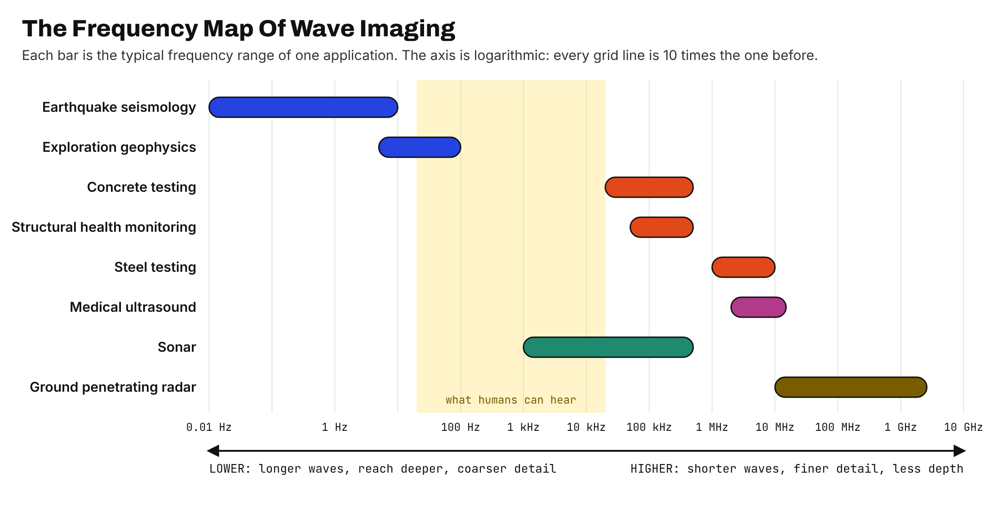
Why Go To Higher Frequencies?
Because a higher frequency gives a sharper picture. A wave cannot show details much smaller than its wavelength, and a higher frequency means a shorter wavelength. In medical imaging this is summed up simply: "For a good resolution, we need a short wavelength, which means we need a higher frequency" [20]. In ultrasonic flaw detection, "the generally accepted lower limit of detection for a small flaw is one-half wavelength" [21]. In seismic imaging, a layer thinner than about a quarter of a wavelength can no longer be measured reliably [19].
There is a price. In the words of the same medical guide, "a higher frequency also means a shorter penetration" [20]. In testing, lower frequencies spread out more, but "the effects of attenuation and scattering are reduced" [21]; in a grainy material like concrete, high frequencies also scatter off the stones in the mix [14]. Every application in Figure B sits where detail and depth are balanced for its job. For simulation and for PINNs there is a second price: more wavelengths across the domain means a harder problem, which is the main challenge of Parts 2 and 3.
Time Domain Versus Frequency Domain
There are two ways to look at the same wave, and they lead to two different equations.
The Time Domain
In the time domain we solve the wave equation above directly and follow u(x, t) as it evolves, like watching a video. To make this concrete, I ran a small simulation for this post: a 0.9 m by 0.5 m slice of concrete-like material (wave speed 4,000 m/s), a 30 kHz pulse sent from the black triangle, and a slower elliptical inclusion (2,600 m/s) on the right. The edges absorb the waves, as if the material went on forever.
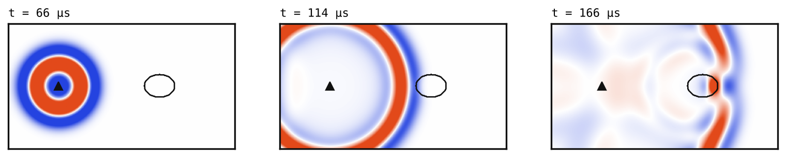
In 2D, a time domain wave from a short pulse is a travelling ring: a thin band of activity that moves outward, with calm material in front of it. A sensor at one point records a time signal, often called a trace:
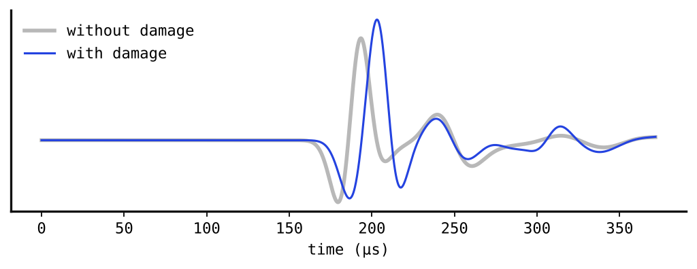
The time domain is intuitive, and it handles short pulses naturally. The cost is that a simulation, or a PINN, must cover the whole time window, and time becomes an extra input.
The Frequency Domain
Any signal can be built from pure sine waves of different frequencies. The Fourier transform finds out how much of each frequency is in it [11]:
If we look at one angular frequency ω at a time, every time derivative turns into a multiplication by −iω. Applying this to the acoustic wave equation removes time completely and leaves the Helmholtz equation [5, 12, 13]:
Here k is the wavenumber: how many oscillations fit into a unit of length. The wavelength is λ = 2π / k, about 13 cm for 30 kHz in concrete. The unknown U(x) is a complex number at every point. Its size is the amplitude of the vibration there, and its angle is the phase, the delay compared with the source.
What does that look like in 2D? I took the same simulation and computed U at 30 kHz:
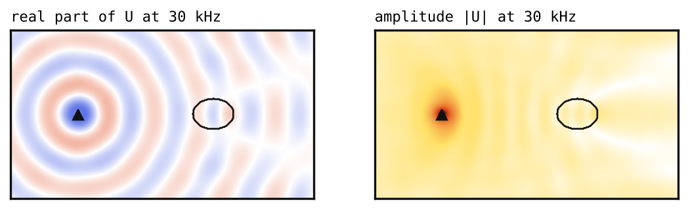
Instead of one ring travelling, a frequency domain field is a standing pattern. Every point vibrates at 30 kHz all the time, and the picture tells you how strongly and with what delay. The rings in the real part are spaced one wavelength apart. Nothing moves, so there is no time axis at all.
| Time domain | Frequency domain | |
|---|---|---|
| Equation | wave equation | Helmholtz equation, one per frequency |
| Unknown | u(x, t), real valued | U(x), complex valued |
| Inputs to a PINN | space and time | space only |
| What a 2D field looks like | a ring travelling outwards (Figure 1) | a fixed pattern of rings filling the domain (Figure 3) |
| What a sensor gives | a time signal (Figure 2) | one amplitude and one phase per frequency |
| Main cost | many time steps | one problem per frequency |
| Main difficulty | long, sharp pulses | high frequencies give many oscillations |
Both views are used in practice. Seismic full waveform inversion is done in the time domain [8] and in the frequency domain, where working one frequency at a time from low to high is a well-known strategy [9, 10]. In this series we mostly stay in the time domain, because short pulses, like those used in ultrasonic testing, contain a whole band of frequencies at once. The scattered field idea works the same way in both.
What Is A Scattered Field?
Imagine throwing a stone into a calm pond with a wooden post sticking out of the water. The ripples spread out in circles, and when they reach the post, new ripples spread out from it. Those new ripples are the scattered waves.
We use the same picture inside a material:
- Background medium: the material without any defect, with wave speed c₀.
- Incident field u₀: the wave that would travel through the background if nothing were hidden inside.
- Inclusion: the hidden object, such as a void, crack or rebar, with a different wave speed.
- Scattered field us: the extra wave created because the inclusion is there.
The field you actually measure is the total field, and it is simply the sum of the two [12]:
We can see this directly in the simulation. I ran it twice, once with the inclusion and once without, and subtracted the two:
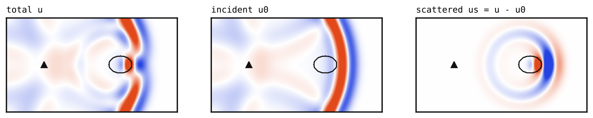
The incident field is large and easy to compute. The scattered field is smaller, but it carries all the information about the inclusion: where it is, how big it is and what it is made of. Splitting a wave this way is a classical tool of scattering theory [12, 13]. In Part 2 we look at why the same split makes PINNs much easier to train.
Watching A Wave Find A Flaw
Let us now go back to the animation at the top of this post, this time with all the ideas from this page. It shows a small block of material, 100 mm wide and 50 mm tall, seen from the side. Somewhere inside it sits a small flaw, like a void or a weak spot. First, here is the wave on its own, without the sensors.
Here is what happens, step by step:
- The tap. We give the top surface a short tap in the middle. This sends out a single pulse, like a knock on a door.
- The ring. The pulse spreads into the block as a half ring. Red and blue are the two sides of the wave: pushing and pulling.
- The hit. When the ring reaches the flaw, part of it bounces off and a small new ring starts from the flaw. This new ring is the scattered field from the section above. The flaw has become a small source of its own.
- The echoes. The wave also bounces off the bottom and the sides of the block. After a while the block is full of crossing rings. Most of them come from the edges, and only a few carry news about the flaw.
In a real test we cannot look inside the block like this. We can only listen at the surface, which is the right-hand side of the animation at the top of this post. These records are called seismograms.
How to read the seismograms:
- Each line is one sensor. S1 is on the far left of the block and S10 on the far right. A flat line means the sensor feels nothing yet. A wiggle means a wave has arrived.
- Close sensors hear it first. S5 and S6 sit right next to the tap, so their first wiggle comes very early. The sensors further out hear it later, which is why the first arrivals form a V shape.
- Later wiggles are echoes. Everything after the first arrival is a wave that has bounced off something: the bottom, the sides or the flaw.
- The flaw leaves a fingerprint. The flaw sits on the right side of the block, so the sensors on the right (S7 to S10) pick up extra wiggles that the sensors on the left do not. The left and right halves of the picture are no longer mirror images.
This is the whole idea behind wave imaging. We tap, we listen, and from the wiggles alone we try to work out what is inside. Finding where the flaw is, and how big it is, from these records is called the inverse problem. Parts 2 and 3 of this series show how a neural network can help with it.
References
- K. Aki and P. G. Richards, Quantitative Seismology, 2nd ed. University Science Books, 2002. Chapter 2 derives the elastic wave equation.
- J. D. Achenbach, Wave Propagation in Elastic Solids. North-Holland, 1973.
- K. F. Graff, Wave Motion in Elastic Solids. Ohio State University Press, 1975 (Dover reprint, 1991).
- L. E. Kinsler, A. R. Frey, A. B. Coppens and J. V. Sanders, Fundamentals of Acoustics, 4th ed. Wiley, 2000. Chapter 5 introduces the acoustic wave equation.
- P. M. Morse and K. U. Ingard, Theoretical Acoustics. McGraw-Hill, 1968 (Princeton University Press reprint, 1986).
- W. A. Strauss, Partial Differential Equations: An Introduction, 2nd ed. Wiley, 2008.
- L. C. Evans, Partial Differential Equations, 2nd ed. American Mathematical Society, 2010. Section 2.4 covers the wave equation.
- A. Tarantola, "Inversion of seismic reflection data in the acoustic approximation," Geophysics, 49(8), 1259–1266, 1984. doi:10.1190/1.1441754
- J. Virieux and S. Operto, "An overview of full-waveform inversion in exploration geophysics," Geophysics, 74(6), WCC1–WCC26, 2009. doi:10.1190/1.3238367
- R. G. Pratt, "Seismic waveform inversion in the frequency domain, Part 1: Theory and verification in a physical scale model," Geophysics, 64(3), 888–901, 1999. doi:10.1190/1.1444597
- R. N. Bracewell, The Fourier Transform and Its Applications, 3rd ed. McGraw-Hill, 2000.
- D. Colton and R. Kress, Inverse Acoustic and Electromagnetic Scattering Theory, 4th ed. Springer, 2019.
- F. Ihlenburg, Finite Element Analysis of Acoustic Scattering. Springer, 1998.
- J. Krautkrämer and H. Krautkrämer, Ultrasonic Testing of Materials, 4th ed. Springer, 1990.
- T. L. Szabo, Diagnostic Ultrasound Imaging: Inside Out, 2nd ed. Academic Press, 2014.
- F. B. Jensen, W. A. Kuperman, M. B. Porter and H. Schmidt, Computational Ocean Acoustics, 2nd ed. Springer, 2011.
- H. M. Jol (ed.), Ground Penetrating Radar: Theory and Applications. Elsevier, 2009.
- C. R. Farrar and K. Worden, Structural Health Monitoring: A Machine Learning Perspective. Wiley, 2013.
- M. B. Widess, "How thin is a thin bed?" Geophysics, 38(6), 1176–1180, 1973. doi:10.1190/1.1440403
- How Equipment Works, "How ultrasound imaging works explained simply, Part 2." howequipmentworks.com, accessed 1 November 2026.
- Evident Scientific, "Introduction to ultrasonic flaw detection." ims.evidentscientific.com, accessed 1 November 2026.
Appendix: The Applications In Pictures
Real photos of the seven applications in Figure A, with their sources.
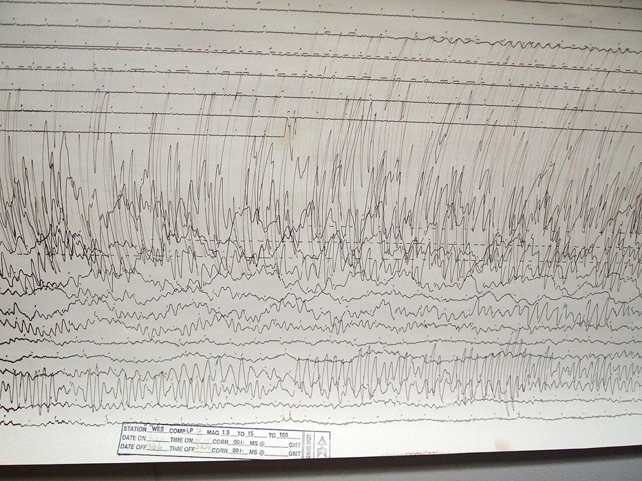
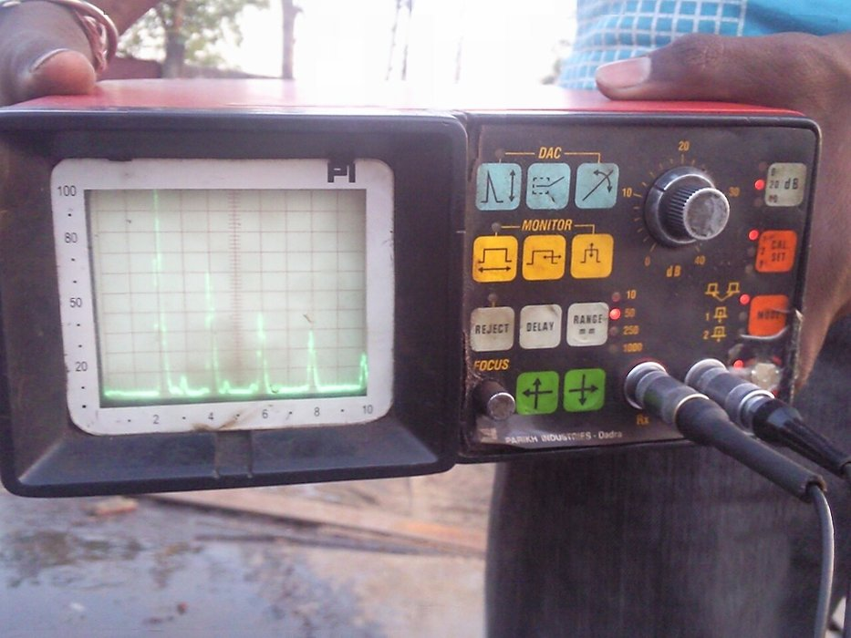
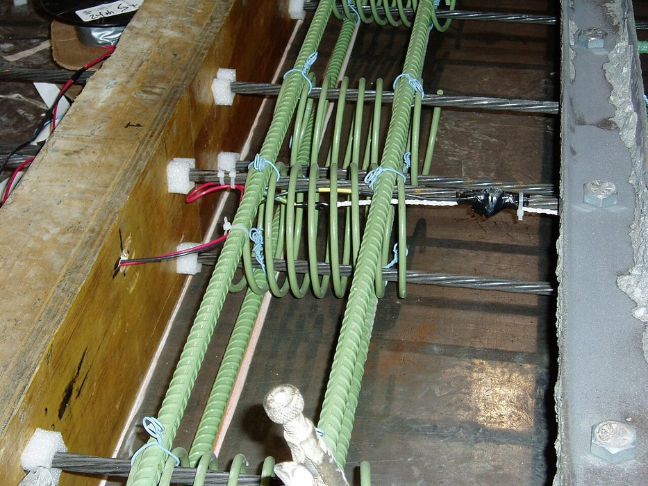
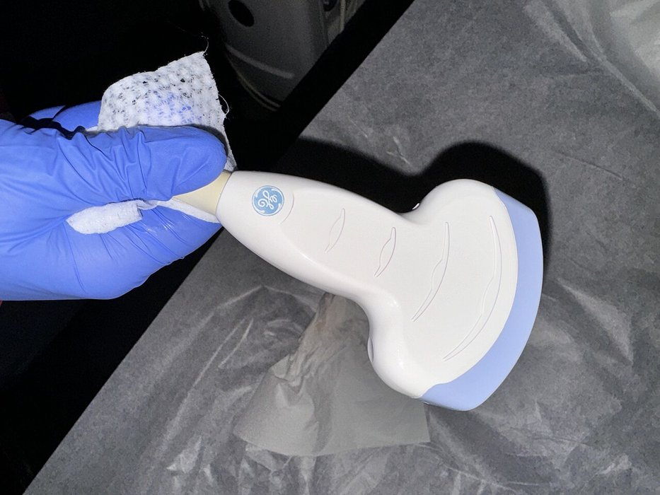
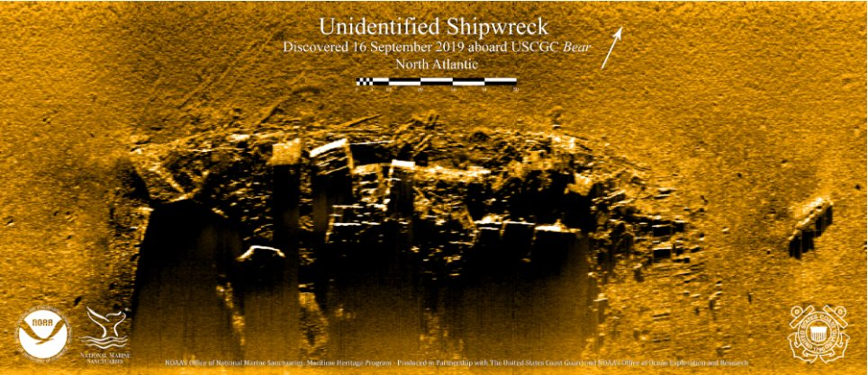